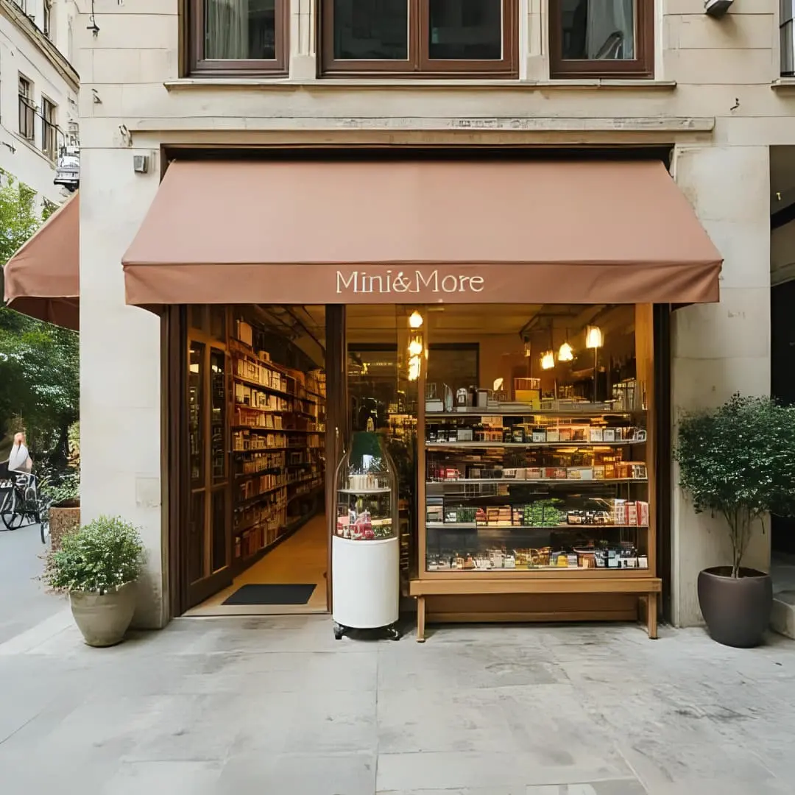
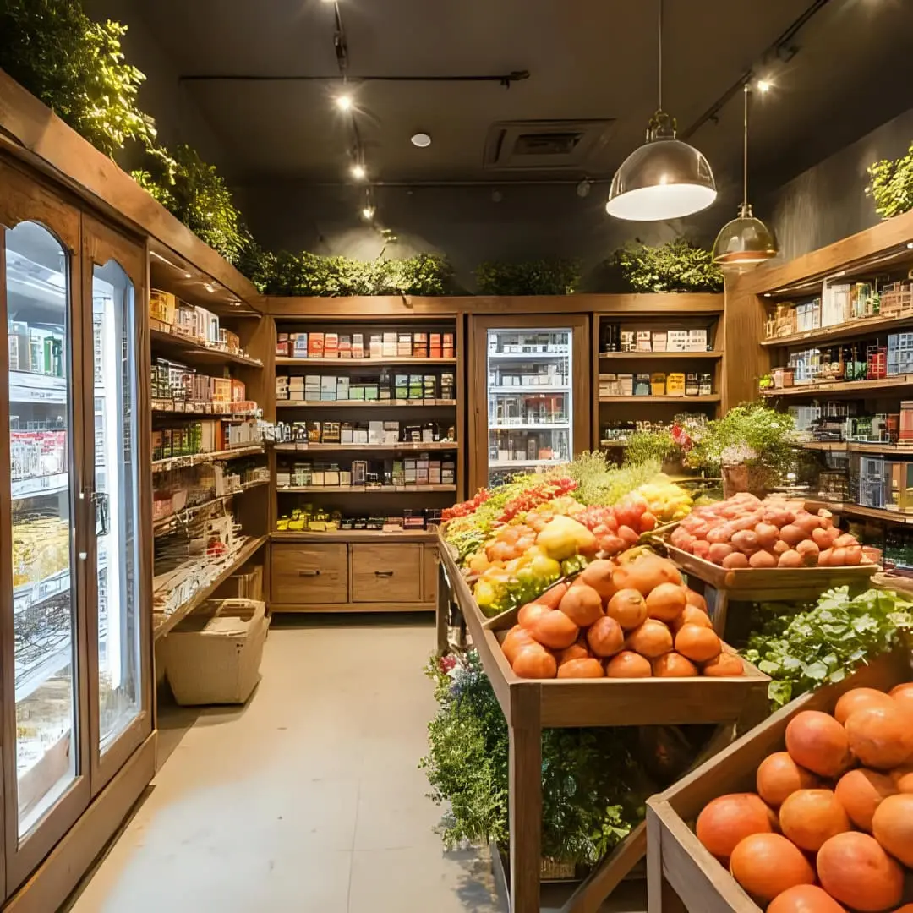
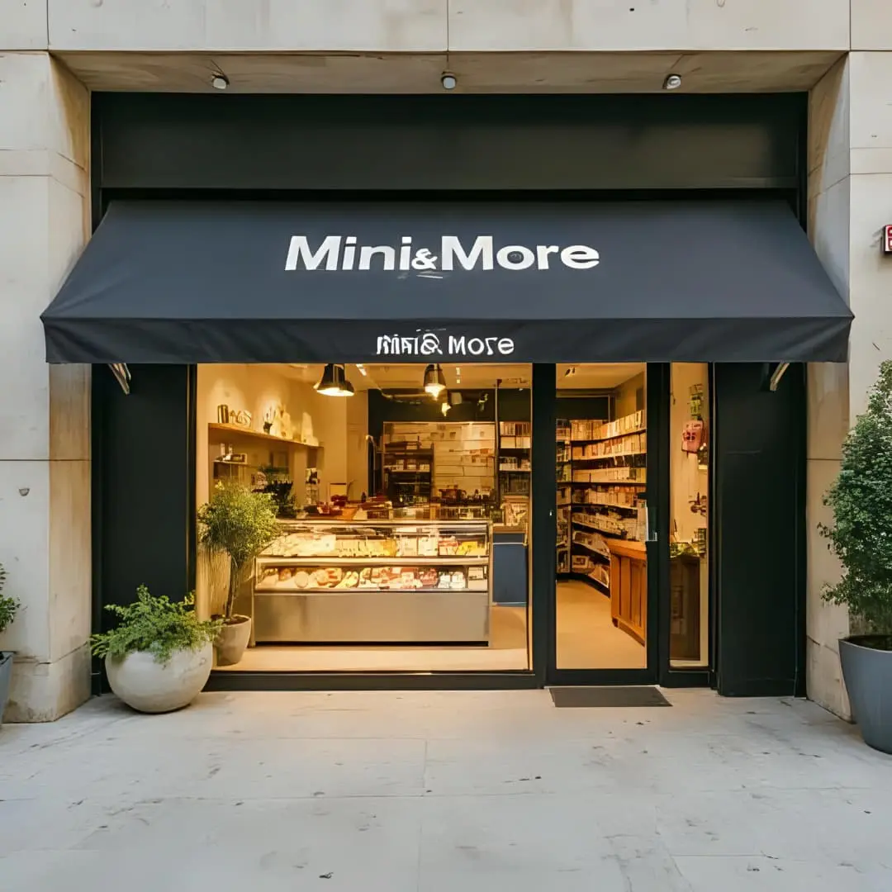
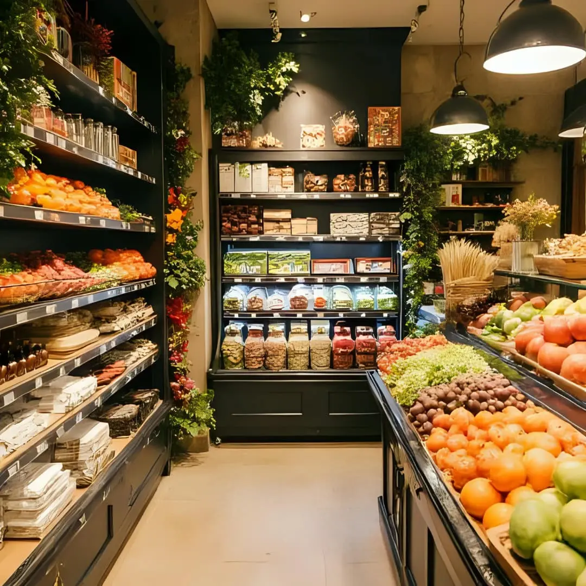

Nossa seleção inclui produtos premium, itens frescos e essenciais cuidadosamente escolhidos para garantir conveniência sem abrir mão do bom gosto. Desde ingredientes gourmet até soluções rápidas para sua rotina, você encontra tudo em um ambiente acolhedor e exclusivo.
Mais do que um mercado, somos um ponto de encontro entre praticidade e estilo de vida. Oferecemos atendimento personalizado, garantia de qualidade e um espaço feito para facilitar sua vida — sem precisar sair do condomínio.
|  |  |
|  |  |